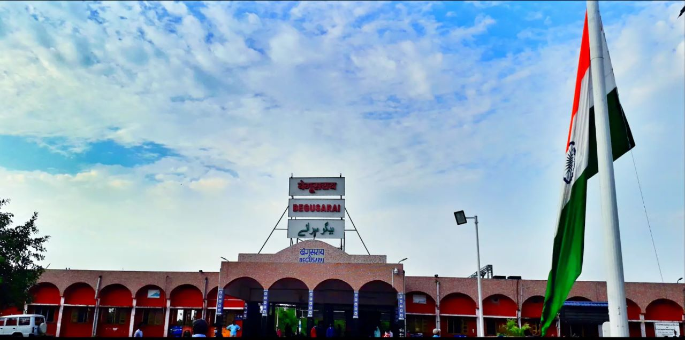
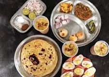
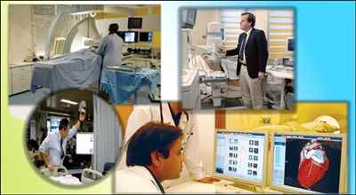

Begusarai City Guide
Begusarai, also known as 'Industrial Capital of Bihar' is a famous city located in Indian state of Bihar.
Begusarai city is Municipal
Corporation as well as administrative headquarters of Begusarai district.
It is one of the thirty-eight districts of Bihar. This city lies
on the northern
bank of River Ganga at an elevation of 41 m (135 ft).
Begusarai is quite famous for being part of ancient Mithila
region.
This part of Bihar also boasts of being birthplace of well known Hindi poet
Rashtrakavi Ramdhari Singh 'Dinkar' and the veteran historian Professor Ram Sharan Sharma.
In early times, Begusarai had been a major communist stronghold. Over the time,
this city has
developed significantly and at present, most of the major utility services are available in this
part of Bihar. Along with a number of ancillary industries are also present in this city.
Apart from that a number of tourist attractions are also present in the city. Asia's largest oxbow lake,
which is known as 'Kabar Jheel' is located in this district.
|  |  |
|
|---|---|---|
About Begusarai |
Emergency Services in Begusarai |
Begusarai Tourism |
|  |  |  |
Food in Begusarai |
Health in Begusarai |
Utility Services in Begusarai |